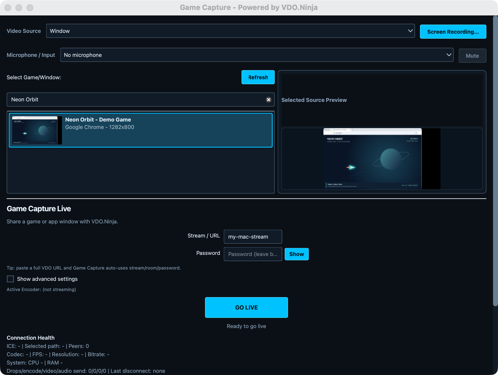

Camera / Webcam
Choose Camera / Webcam, select the device, then set its resolution and frame rate. Camera mode starts with No microphone; choose a Microphone / Input to add sound. The live camera preview appears after starting.
Share an app window or camera through VDO.Ninja, then watch it in a browser or bring it into OBS.
Requires an Apple Silicon (M-series) Mac; Intel Macs are not supported. Built for macOS 14.2+. The current beta was tested on macOS 26.4.1; minimum-OS and fresh-machine compatibility remain unverified. Windows remains the stable production version.

Camera and Microphone permissions can also be changed under Privacy & Security. Allow only the sources you intend to share.
Choose Camera / Webcam, select the device, then set its resolution and frame rate. Camera mode starts with No microphone; choose a Microphone / Input to add sound. The live camera preview appears after starting.
Enable Syphon output in the sending Mac app, choose Syphon (texture sharing), and select its sender. Syphon supplies video; select audio separately. Spout2 is the Windows source option.
Open Show advanced settings → Audio Source. App and system audio use native macOS capture; a virtual audio cable is not required for these modes.
| Source | What it shares |
|---|---|
| Selected window/app audio | Audio from the selected application, including its child processes and other windows. Available with Window video capture. |
| System audio (all apps) | The Mac’s application audio mix. Other apps’ sounds may be included. |
| Selected microphone/input | The device chosen in Microphone / Input. |
| No audio | No primary audio. Also leave the microphone disabled if you want a silent stream. |
To narrate over app audio, select your microphone and enable Also add microphone/input in advanced settings. Mute / Unmute for the microphone leaves app audio playing. Use headphones when listening to your own viewer to avoid feedback.
Keep the default Opus audio for normal VDO.Ninja viewing. Use the generated viewer link so the receiver gets the selected audio-channel settings.
Hardware H.264 encoding on Apple Silicon. Start here for window or game capture to leave more CPU capacity for the source app.
Select H.264 with Software (x264 / VP9 / AV1). This uses the CPU and is useful when comparing a hardware-encoder problem. Lower resolution or FPS if the Mac cannot keep up.
Auto tries hardware and then software. The software menu lists other codecs, but H.264 is the straightforward starting point for this guide.
1080p60 is not yet production-qualified across machines and workloads. Start at 720p30, verify received video and audio, and increase settings gradually. See the qualification record for measured results and remaining limits.
Use your director’s publishing URL, or enter the Room and optional Label in advanced settings. Match the room’s password. With room quality enabled, the app can send a lower-quality preview to a director or guest and a higher-quality stream to scene viewers.
Director control is optional. Enable it only when you need remote changes, and share its control token with your trusted director.
Add a Browser Source in OBS and paste the generated viewer URL. Set the source dimensions to match your stream, then verify picture and sound in OBS before using it in a production. Avoid playing the same feed through multiple monitors or browser tabs.
Show advanced settings → Output also offers destinations such as WHIP, SRT, and RTMP. Supply the service’s publishing endpoint and credentials. Receiver setup depends on that service; VDO.Ninja room controls and viewer links apply to VDO.Ninja output. Trusted remote RTMPS and broader service compatibility remain part of beta qualification.
Check Screen Recording permission, reopen Game Capture if macOS requested it, and click Refresh. Clear the source filter and select the window again. Restore a minimized or hidden source window. Closing the source app requires choosing an available source before starting again.
Restore the source window. The Mac app pauses video delivery while the captured window is suspended and resumes when fresh frames return; audio may continue. Keep the source visible during a stream.
Check Audio Source, microphone selection and mute state, and the source app’s own volume. Selected app audio needs Window capture. Check macOS audio/microphone permissions as appropriate, then stop and start again after permission or device changes. Verify the viewer’s playback and volume controls too.
Check its Privacy & Security permission, connect the device, and close other software that may hold it. Refresh and select it again. After a permission prompt, retry Go Live. Physical-device hotplug and busy-device coverage is still incomplete in this beta.
Try H.264 with Apple VideoToolbox at 720p30, close unnecessary receivers on the publishing Mac, and check available upload bandwidth. Compare with a viewer on another machine. Stop before changing resolution, FPS, or encoder settings.
Download a fresh copy from the official Mac release and compare its checksum with the release’s checksum file. Keep macOS security checks enabled. If the official copy still fails, report the exact message and your macOS version.
Update Mac betas manually from the Mac release page: stop streaming, quit the app, and replace the copy in Applications. The stable update check excludes prereleases. Beta 1 and Beta 2 both show the internal app version 0.2.64; use the ZIP’s beta number to identify the download.
For a problem report, use Help → Open Log Folder and include the Mac model, macOS version, beta download, video/audio source, encoder, and steps to reproduce. Remove credentials from logs before sharing them.